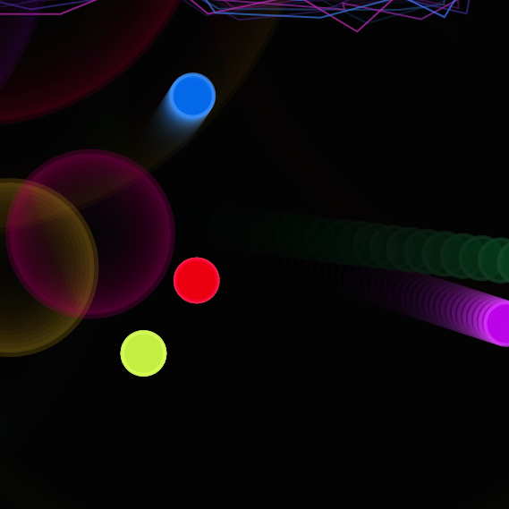

MMA for short
At the end of the first semester, my team turned back once again to p5. This is to create a game for any web-browser, where multiple people could join in with their smartphones, to control their own little dot on the screen via their phones' acceleration sensors and gyroscope. The idea was simple: slamming your opponents out of the playing zone and try to be the last player standing.
I should mention that although you have seen a lot of colorful projects, the main focus of the study program during the first semester lay on learning Java. Since that is not very exciting to look at, I have decided to only put the visually interesting things into my portfolio. Nevertheless, we learned about Design Patterns, using Git or Computational Thinking in general. During the first semester, I also created a text-based adventure game, for example.